조경기사 (2006-05-14 기출문제)
1과목: 조경사
1. 경복궁 자경전의 서쪽 화담의 벽화문양에 표현되지 않은 식물은?
- 매화
- 소나무
- 국화
- 대나무
(정답률: 50%)

2. 다음 한국전통 조경의 설명으로 틀린 것은?
- 고대의 한국정원은 궁중이나 귀족의 저택 위주로 꾸며졌다.
- 한국적 색채를 띄게 된 정원양식은 신라시대 이후 부터이다.
- 창덕궁은 자연미와 인공미가 혼연일치가 되도록 축조(築造)되었 다.
- 통일 신라시대의 대표적인 조경의 예(例)는 안압지(雁鴨池)를 들수 있다.
(정답률: 82%)
3. 미국의 조경발달에 획기적인 영향을 미친 시카고박람회의 영향으로 틀린 것은?
- 도시미화운동
- 도시계획의 발달
- 조경계획을 수립함에 있어 타 전문분야와 공동작업의 계기마련
- 신도시계획
(정답률: 81%)
4. 다음 각 국가의 정원이용에 대한 설명으로 옳지 않은 것은?
- 그리스인 - 사회, 정치, 학문 생활의 중심이었다.
- 이탈리아인 - 부호, 학자, 예술가들이 수집한 예술품을 배열하고 감상하는 곳이었다.
- 스페인인 - 시에스타와 그늘을 즐기고 분수에서 떨어지는 물로 서 청량감을 즐기는 곳이었다.
- 영국인 - 18세기에는 주로 앉아서 감상하거나 대화하는 장소이 었다.
(정답률: 48%)
5. 르네상스 후기 바로크 양식의 영향을 받아 조성된 곳은?
- 빌라 란테(Villa Lante)
- 빌라 에스테(Villa Este)
- 빌라 마다마(Villa Madama)
- 이졸라벨라(Isola Bella)
(정답률: 75%)
6. 일본의 도시계획상 최초의 근대 도시공원으로 고시된 곳은?
- 히비야공원
- 신주꾸어원
- 율림공원
- 육의원
(정답률: 60%)
7. 1893년 미국의 시카고에서 개최되었던 세계 콜롬비아 박람회(T he world's columbian Exposition) 회의장설계(도시설계, 건축, 조 경)에 관여했던 인물은?
- 맥킴(Mckim), 번함(Bunharm), 옴스테드(Omsted)
- 루-츠(Roots), 번함(Bunharm), 터나드(Trnnard)
- 보우(Vaux), 엘리엇(Eliot), 옴스테드(Omsted)
- 라이트(Wright), 스타인(Stein), 하워드(Howard)
(정답률: 64%)
8. 다음 [보기]의 일본정원 양식발달순서가 옳은 것은?
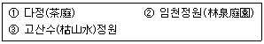
- ① - ② - ③
- ② - ③ - ①
- ③ - ① - ②
- ② - ① - ③
(정답률: 84%)
9. 서원 옆을 흐르는 계류의 물을 서원 안으로 끌어들여 수(水)경 관 요소로 삼은 곳은?
- 심곡서원
- 도동서원
- 옥산서원
- 병산서원
(정답률: 38%)
10. 다음중 중국, 한국, 일본의 정원을 조성한 시기가 모두 16세기 에 해당하는 것은?
- 원명원. 주합루. 육의원
- 유원. 옥호정. 선동어소
- 졸정원. 소새원. 대덕사 대선원
- 창춘원. 경정서석지. 수학원이궁
(정답률: 87%)
11. 고대 그리스에서 '도시광장(廣場)' 이라 부르던 명칭은?
- 플레이스(place)
- 아고라(agora)
- 포럼(forum)
- 프라자(plaza)
(정답률: 89%)
12. 중심에는 16세기 말에 세운 오벨리스크(obelisk)가 위치하고 있고, 네 귀쪽에 19세기초에 만든 좌사자상(座獅子像)의 분수가 배 치되어 있는 장타원(長楕園)형의 광장은?
- 카피도 오리오 광장 (Pizza del Campidoglio)
- 포포로 광장 (Piazza del Popolo)
- 산 피에트로 광장 (Piazza di San Pietro)
- 라테라아노 광장 (Piazza Laterano)
(정답률: 67%)
13. 중국 명나라 시대에 조성된 대표적인 정원으로 소주의 4대 명 원에 속하는 정원은?
- 졸정원
- 원명원
- 이화원
- 작원
(정답률: 40%)
14. 낭만주의 시대 자연풍경식 정원이 제일 먼저 발달한 국가는?
- 프랑스
- 독일
- 영국
- 이탈리아
(정답률: 74%)
15. 조선시대 궁궐의 침전(寢殿) 후정(後庭)에서 볼수 있는 대표적 인 인공 시설물은?
- 조그만 크기의 방지
- 우물
- 경사지를 이용한 계단식 화단
- 석교
(정답률: 71%)
16. 이슬람 정원의 특징으로 잘못된 것은?
- 정원은 주건물의 동향이나 북향에 설치
- 카나트에 의해 물 공급
- 정원의 유형은 산지정원과 평지정원으로 구분
- 산지정원에서는 사분원(char-bagh)형식을 주로 설치
(정답률: 55%)
17. 다음중 방지(方池) 방도(方島)형의 연못형태를 갖추고 있지 않 은 것은?
- 선교장 활래정 연못
- 부용동 세연지
- 경회루 연못
- 청평사 문수원 정원 영지
(정답률: 72%)
18. 일본 고산수(枯山水) 정원양식의 발생 배경에 대한 설명으로 틀린 것은?
- 정치와 경제적 영향
- 기본 재료인 흰모래구입의 용이성
- 직설적인 표현의 만연
- 불교 선종(禪宗)의 영향
(정답률: 73%)
19. 다음중 조경과 관련된 옛 문헌과 저자의 연결이 틀린 것은?
- 임원십육지(林源十六志) - 서유구
- 산림경제(山林經濟) - 강희안
- 고사신서(故事新書) - 서명응
- 순원화훼잡설(淳園花卉雜說) - 신경준
(정답률: 59%)
20. 무어 양식의 극치라고 일컬어지는 알함브라(Alhambra)궁은 여 러개의 중정(Patio)이 있다. 이 중 4개의 수로에 의해 4분 되는 파 라다이스 정원 개념을 잘 나타내고 있는 중정은?
- Alberca Patio(연못의 중정)
- Daraxa Patio(다라야 중정)
- Reja Patio(창격자 중정)
- Lions Patio(사자의 중정)
(정답률: 85%)
2과목: 조경계획
21. 다음 관광행위의 우형중 집을 출발하여 목적지에 직행한후 유 행(遊行)과 탐행(探行)을 즐기고 곧바로 집으로 돌아오는 유형은?
- 피스톤형
- 옷핀형
- 스푼형
- 탬버린형
(정답률: 50%)
22. 조경계획 대상지역 분석시 이용될수 있는 열(熱)의 복사상태를 설명하는 단위(單位)를 알베도(Albedo)라 한다. 모든 열(熱)을 반사(反射)시키는 경우의 알베도(Albedo)
- 0.0
- 0.5
- 1.0
- 100
(정답률: 58%)
23. 주민들과의 인터뷰 실시중 가장 바람직하지 못한 사항은?
- 그날의 날씨 및 분위기를 기록한다.
- 응답자가 될수 있는 한 많은 의견을 제시하도록 유도한다.
- 분위기를 부드럽게 하기 위해 간단한 음료를 대접한다.
- 응답자가 진실을 말하도록 자신의 신분을 적당히 과장한다.
(정답률: 88%)
24. 도시공원 및 녹지 등에 관한 법률중 도시공원의 점용허가의 구 체적인 기준으로 옳지 않은 것은?
- 전선은 불가피한 경우를 제외하고는 지하에 설치할 것
- 가설건축물의 건축면적(연면적을 말한다.)이 500제곱미터 이하 일 것
- 공동구의 관리사무소는 도시공원의 미관을 해치지 아니하는 범 위 안에서 불가피하게 도시공원 안에 설치하여야 하는 경우에 한할 것
- 경찰관 파출소의 건축면적(연면적을 말한다)은 116제곱미터 이 하가 되도록 할 것
(정답률: 27%)
25. 시설물 배치계획에 관한 서술중 옳지 않은 것은?
- 구조물의 평면이 장방형일때는 긴변이 등고선에 수직이 되도록 배치한다.
- 다른 시설물들과 인접할 경우, 구조물들로 형성되는 옥외공간 의 구성에 유의해야 한다.
- 여러 기능이 공존하는 경우, 유사기능의 구조물들은 모아서 집 단별로 배치한다.
- 시설물이 랜드마크적 성격을 갖고 있지 않다면, 주변경관과 조 화되는 형태, 색채 등을 사용하는 것이 좋다.
(정답률: 71%)
26. 다음중 리커트 척도(Likert scale)에 대한 설명이 잘못된 것은?
- 자유 응답 설문의 한 종류이다.
- 태도를 측정하는데 많이 쓰인다.
- 동일한 사항에 대하여 몇가지 질문을 한후 이 결과를 종합한다.
- 응답결과는 5단계의 척도로 구성되어 진다.
(정답률: 54%)
27. 노외주차장의 주차방식중 출입구가 1개일 때 차로의 너비가 가장 큰 것은?
- 평행주차
- 60˚주차
- 45˚주차
- 직각주차
(정답률: 42%)
28. 시설녹지의 설치이유로 적합하지 않은 것은?
- 부족한 녹지 공간의 확보
- 상충되는 토지이용 및 기능 간의 분리
- 각종 오염이나 공해의 방지
- 각종 재해나 시설의 파손 방지
(정답률: 31%)
29. 130세대인 주택단지의 어린이 놀이터 면적은? (단, 시.군지역의 경우를 제외한다.)
- 300m2
- 330m2
- 400m2
- 450m2
(정답률: 57%)
30. 다음중 도시 공원녹지의 수요를 산정하는 방식이 아닌 것은?
- 기능 배분 방식
- 공간 배분 방식
- 생활권별 배분 방식
- 이용율에 의한 방식
(정답률: 38%)
31. 정원에 대한 공간계획개념의 설명으로 틀린 것은?
- 중정(中庭)의 식재는 채광 및 통풍에 대하여 특히 유의한다.
- 주정(主庭)은 상록교목 위주의 차폐식재를 하여 아늑한 분위기 를 조성한다.
- 전정(前庭)은 내방객에게 밝은 인상을 줄수 있는 화목류를 군식 으로 처리한다.
- 후정(後庭)은 복잡한 식재 패턴을 지양하고 부분적인 차폐가 가 능토록 한다.
(정답률: 67%)
32. 뉴먼 (Newman)은 주거단지 계획에서 환경심리학적 연구를 응 용하여 범죄 발생율을 줄이고자 하였다. 뉴먼이 적용한 가장 중요 한 개념은?
- 영역성 (territoriality)
- 개인적 공간 (personal space)
- 혼잡성 (crowding)
- 프라이버시 (privacy)
(정답률: 65%)
33. S. Gold 의 레크리에이션 계획의 주요 접근 방법에 해당되지 않는 것은?
- 경제접근방법
- 활동접근방법
- 심미접근방법
- 종합접근방법
(정답률: 54%)
34. 비교적 높은 공간적 밀도하에서 혼잡(crowding)을 느끼는 정도 는 구성원들 간의 아는정도와 환경(공간)에 대한 익숙한 정도에 따라 달라진다. 다음중 혼잡을 느끼는 정도가 가장 높은 것은?
- 서로 잘 아는 그룹이 익숙한 환경내에 있을 때
- 서로 잘 아는 그룹이 익숙하지 못한 환경 내에 있을 때
- 서로 잘모르는 그룹이 익숙한 환경 내에 있을 때
- 서로 잘 모르는 그룹이 익숙하지 못한 환경내에 있을 때
(정답률: 58%)
35. 다음중 체계화(Network)된 공원녹지가 도시공간 내 점(點)처럼 흩어져 있는 오픈스페이스에 비해 장점으로 볼수 없는 것은?
- 접지성과 개방성의 증대
- 포괄성과 연결성의 증대
- 상징성과 식별성의 증대
- 획일성과 단순성의 증대
(정답률: 59%)
36. 자연공원법에서 자연공원의 지정기준 설명으로 틀린 것은?
- 자연생태계 - 자연생태계의 보전상태가 양호하나 멸종위기 야생동물이 서식할 것
- 자연경관 - 자연경관의 보전상태가 양호하여 훼손 또는 오염이 적으며 경관이 수려할 것
- 지형보존 - 각종 산업개발로 경관이 파괴될 우려가 있는 것
- 문화경관 - 문화재 또는 역사적 유물이 있으며, 자연경관과 조 화되어 보전의 가치가 있을 것
(정답률: 50%)
37. 어느 주택단지의 대지면적이 10,000m2, 건물의 1층 바닥면적 의 합계가 2,500m2이고, 건물의 총 연면적이 15,000m2일 때 이 주 택단지의 용적율은?
- 20%
- 60%
- 120%
- 150%
(정답률: 65%)
38. 다음 조경 접근방법중 이용자들이 공유하는 경관적 체험의 중 요성을 강조하는 것은?
- 현상학적 접근
- 기호학적 접근
- 환경심리적 접근
- 미학적 접근
(정답률: 50%)
39. 다음 레크리에이션의 계획 접근방법중 한계수용력과 환경영향 이 지표가 되는 방법은?
- 자원형 접근방법
- 활동형 접근방법
- 경제형 접근방법
- 행태형 접근방법
(정답률: 33%)
40. 토양의 산도는 식물의 생존을 좌우한다. pH 7을 기준으로 한 다면 pH 6은 pH 7보다 몇배의 산도가 있다고 할수 있는가.
- 6/7배
- 1배
- 3.14배
- 10배
(정답률: 65%)
3과목: 조경설계
41. 디자인에서 행태적 접근을 시도한 로버트 송머(Robert Somme r)의 개인적 공간(personal space)을 바르게 설명한 것은?
- 대인관계에서 자신의 주위에 일정한 공간을 필요로 하고 있으 며, 이 공간이 침해될 때 본능적으로 방어하는 것을 말한다.
- 프라이버시가 있는 닫힌 공간을 말한다.
- 인간은 공간내에 존재하며, 그 공간은 인간이 창조하여 왔다.
- 토지이용면에서 주거지역을 말한다.
(정답률: 36%)
42. 먼셀 표색계에서 5Y4/6에서 4의 의미는?
- 색상(色相)
- 명도(明度)
- 채도(彩度)
- 색명(色名)
(정답률: 54%)
43. 다음 운동시설에 관한 설명중 잘못된 것은?
- 운동장은 원활한 배수를 위해서 5%이상의 관 기울기를 둔다.
- 골프연습장은 타석간의 안전거리를 위해 2.5m이상의 안전거리 를 유지해야 한다.
- 테니스장의 클레이코트에는 잡석층이 ∮40mm이하의 골재를 포설하고 전압과 물다짐을 한다.
- 썰매장의 슬로프 가장자리는 폭 1m이상, 높이 50cm이상 두께 의 눈을 쌓아야 한다.
(정답률: 39%)
44. 담장을 벽돌 쌓기로 시공할 때 하루에 가능한 벽돌의 쌓기 최 대 높이 기준은?
- 1.0m 이하
- 1.2m 이하
- 1.5m 이하
- 2.0m 이하
(정답률: 58%)
45. 경관의 변화요인(variable factors) 구성 인자들로만 나열된 것은?
- 운동, 연속성, 거리
- 관찰위치, 거리, 빛
- 복원중 (정확한 보기 내용을 아시는분께서는 오류 신고를 통하여 내용 작성부탁 드립니다.)
- 복원중 (정확한 보기 내용을 아시는분께서는 오류 신고를 통하여 내용 작성부탁 드립니다.)
(정답률: 57%)
46. 다음의 조경설계에 관한 설명 중 가장 알맞은 것은?
- 조경설계란 건설산업기본법 및 동 시행령에서 밝히고 있는 조경관련 분야의 설계를 말하며 실시설계는 여기에 포함하지 않는 것이 일반적이다.
- 기본설계에는 사전조사사항, 계획 및 방침 개략시공방법, 공정 계획 및 공사비등의 기본적인 내용이 포함된다.
- 실시설계는 실제시공에 적용된 준공내용을 설계도서에 표기하 여 사후관리를 위한 자료로 삼기 위해 작성하는 것이다.
- 조경설계에서 역사문화경관의 보전에 관한 것은 별도의 기준이 없으며, 고려하지 않는 것이 옳다.
(정답률: 60%)
47. 병원 수술실의 바닥이나 벽면을 청록색 계통으로 칠하거나 수 수술복의 색상을 청록색으로 하는 것은 어떤현상을 고려한것인가?
- 색순응
- 정의 잔상
- 부의 잔상
- 명암순응
(정답률: 47%)
48. 자전거도로에서 해당 자전거의 설계속도가 30(킬로미터/시)일 경우 확보해야 할 최소 정지시거(미터)기준은?
- 10이상
- 15이상
- 30이상
- 50이상
(정답률: 30%)
49. 다음중 지체장애인 전용주차장의 주차 대수 1대의 최소면적 기 준으로 옳은 것은?
- 12.65m2이상
- 15m2이상
- 16.5m2이상
- 17.5m2이상
(정답률: 62%)
50. 주택건설 기준에서 공동주택을 건설하는 주택단지에는 그 단지 면적의 얼마를 녹지로 확보하여 공해방지에 필요한 조치를 하여야 하는가?
- 1백분의 10
- 1백분의 20
- 1백분의 30
- 1백분의 50
(정답률: 67%)
51. 경관의 복잡성(Complexity)과 선호도(Preference)의 일반적인 관계는?
- 정비례 관계를 이룬다.
- 반비례 관계를 이룬다.
- 거꾸로 된 "U"자 형태(역 U자)의 관계를 이룬다.
- 불규칙적인 관계를 이룬다.
(정답률: 57%)
52. 다음중 특이성 비(uniqueness ratio)를 통하여 계곡(하천)의 경 관가치를 평가한 사람은?
- Iverson
- Halprin
- Leopold
- Mcharg
(정답률: 72%)
53. 옥외 3인용 평벤치의 경우 바닥면에서 좌면 앞 부분의 가장 높 은 위치까지의 수직거리 : A 좌면 앞 가장자리부터 좌면 뒤끝까지 의 수평거리 : B의 기준으로 옳은 것은? (단, 단위는 mm이다.)
- A : 350~380, B : 300~350
- A : 380-410, B : 400~500
- A : 410~440, B : 300~350
- A : 350~380, B : 400~450
(정답률: 59%)
54. 자연환경의 지각에 가장 큰 역할을 하는 감각기관은?
- 시각
- 청각
- 취각
- 촉각
(정답률: 63%)
55. 색체의 진출, 후퇴와 팽창, 수축에 관한 설명중 가장 거리가 먼 것은?
- 진출색은 황색, 적색 등의 난색계열이다.
- 팽창색은 명도가 어두운 색이다.
- 수축색은 한색계열이다.
- 후퇴색은 파랑, 청록등의 한색계열이다.
(정답률: 80%)
56. Kevin Lynch가 주장한 환경적 이미지에 해당되지 않는 것은?
- 공간적 구조(structure)
- 복잡성(complexity)
- 독자성(identity)
- 의미(meaning)
(정답률: 17%)
57. 1/50,000 지형도에서 주곡선의 간격은?
- 5m
- 10m
- 20m
- 50m
(정답률: 59%)
58. 다음 공간구성의 기본적인 기법에 해당되지 않는 것은?
- 공간의 연출기법
- 공간의 형성기법
- 공간의 연결기법
- 공간의 수식기법
(정답률: 22%)
59. 벤츄리(R. Venturi. 1983)의 상징적 도시경관 분석의 설명으로 틀린 것은?
- 도상학(lconography)에 바탕을 두고 있다.
- 도시경관이 대중과 교호(Communication)해야 한다고 보고 있다.
- 화려한 네온사인등은 소유주의 개성과 그 지역의 도시정신을 반영하고 있다.
- 간판, 광고물 등의 비고정적 요소보다는 건물의 규모, 형태등의 고정적 요소를 중시한다.
(정답률: 31%)
60. 파선의 사용용도가 옳게 설명된 것은?
- 도형의 중심을 표시하는데 사용
- 대상물에 보이지 않는 부분의 모양을 표시하는데 사용
- 중심이 이동한 중심궤적을 표시하는데 사용
- 단면의 무게중심을 연결하는데 사용
(정답률: 60%)
4과목: 조경식재
61. 다음중 개화기(開花期)가 빠른것부터 옳게 나열한 것은?
- 개나리 - 매화나무 - 병꽃나무 - 배롱나무
- 풍년화 - 개나리 - 백합나무 - 배롱나무
- 매화나무 - 고광나무 - 개나리 - 산수유
- 산수유 - 노각나무 - 명자나무 - 자귀나무
(정답률: 43%)
62. 다음중 춘식구근(春植球根)만으로 짝지워진 것은?
- 칸나, 달리아, 히아신스, 백합
- 아네모네, 은방울꽃, 크로커스
- 무스카리, 백합, 튤립, 시클라멘
- 칸나, 달리아, 글라디올러스
(정답률: 38%)
63. 우리나라 마을의 정자목으로 흔히 볼수 있는 수정이 아닌 것 은?
- Ginko biloba L
- Zelkova serrata Makino
- Stewartia koreana Nak
- Celtis sinesis Pers
(정답률: 45%)
64. 지주의 설치가 용이하고, 견고한 지지를 필요로 하는 장소에 사용하지만, 설치면적을 많이 차지하여 통행에 불편을 주는 단점도 있는 지주의 종류는?
- 단각지주
- 삼각지주
- 당김줄형지주
- 삼발이지주
(정답률: 45%)
65. 이식을 위한 수목의 굴취시 근원직경이 15cm인 상록수의 표 준적인 뿌리분의 크기(직경)는?
- 64cm
- 72cm
- 84cm
- 92cm
(정답률: 28%)
66. 식생의 동심원적 구조에서 호소의 식생대와 구성종의 연결이 틀린 것은?
- 침수식생 - 붕어마름
- 부유식생 - 생이가래
- 정수식생 - 마름
- 소택관목식생 - 버드나무
(정답률: 50%)
67. 층층나무과 수종이 아닌 것은?
- 산수유
- 흰말채나무
- 이팝나무
- 식나무
(정답률: 42%)
68. 다음중 누향나무의 학명으로 옳은 것은?
- Juniperus procumbens M
- Juniperus chinesis var. sargetii H
- Juniperus rigida var. koreana T.
- Juniperus communis var. nipponica W
(정답률: 60%)
69. 식재거리 사방 4m 간격으로 정삼각형 식재를 한다면 1ha당 수목은 약 몇 그루 식재되는가?(오류 신고가 접수된 문제입니다. 반드시 정답과 해설을 확인하시기 바랍니다.)
- 약 3,000본
- 약 2,866본
- 약 2,533본
- 약 2,555본
(정답률: 67%)
70. 근계경쟁으로 인하여 집단식재를 피하고 단목식재를 하는 것이 가장 좋은 수종은?
- Larix leptolepis GORDON
- Magnolia denudata DESR
- Betula platyphylla var. japonica HARA
- Abies holophylla MAX
(정답률: 50%)
71. 도시공원 및 녹지등에 관한 법률상에서 개발제한구역 및 녹지 지역을 제외한 도시지역안 있어서의 도시공원면적의 기준은 해당 도시지역안에 거주하는 주민 1인당 얼마로 하여야 하는가?
- 3m2이상
- 6m2이상
- 9m2이상
- 10m2이상
(정답률: 42%)
72. 생태적 천이단계에서 극상단계(성숙단계)의 설명으로 틀린 것 은?
 은 1에 가깝다.
은 1에 가깝다.- 순군집 생산량(수확량)이 높다.
- 먹이 연쇄는 그물눈 모양이다.
- 영양 염류 순환이 폐쇄적이다.
(정답률: 25%)
73. 수생식물의 식재효과에 대한 설명중 옳지 않은 것은?
- 오염물질을 분해하여 수질정화를 하며, 습지 내 토양의 유입을 억제한다.
- 수서곤충, 어류, 조류등 야생동물의 서식공간을 제공한다.
- 다공질을 좋아하는 곤충들의 서식처를 제공한다.
- 호안의 침식을 방지한다.
(정답률: 45%)
74. 추이대(ecotone)에 대한 설명중 옳지 않은 것은?
- 숲과 초원등의 군집 사이에서 볼수 있는 이행부분이다.
- 추이대는 인접해 있는 군집지역보다 넓다.
- 때때로 주연효과를 볼수 있다.
- 추이대 폭의 너비에 따라 인접군집과 다른 서식처가 성립될수 있다.
(정답률: 60%)
75. 원산지가 중국이며, 수간이나 가지가 녹색으로 엽병이 잎보다 길고, 성장이 빨라 녹음수 및 공원수로 적당한 수종은?
- Firmiana simpiex W.F. Wight.
- Sophora japonica L
- Acer negundo L
- Chaenomeles lagenaria Koidz
(정답률: 37%)
76. 다음중 도장지(徒長枝)의 의미를 옳게 설명한 것은?
- 주간에서 분지되는 굵은 가지를 말한다.
- 지조(枝條)에서 분지되어 안쪽으로 가는 가지를 말한다.
- 수목의 가지와 잎을 전정하여 독특한 수형을 만드는 것을 말한다.
- 가지중 생장이 과도하여 보통 가지보다 돌출된 가지를 말한다.
(정답률: 65%)
77. 부산지역 해변가 아파트단지에 조경수목을 식재할 경우 주변 환경요인을 고려해 가장 적합한 수종은?
- Zelkova serrata Makino
- Euonymus japonica Thunt
- Abies nephrolepis MAX
- Larix kaemferi Carr
(정답률: 47%)
78. 온대성 화옥류의 개화에 대한 설명중 틀린 것은?
- 화아(꽃눈)는 보통 개화 전년에 형성된다.
- 개화는 온도에 의해 주로 지배되고 일장(日長)과는 별로 관계가 없다.
- 저온에 화아가 노출되면 화아의 정상적 생육에 저해요인이 된다.
- 생육과 개화는 auxin 이나 gibberellin 물질의 증가 및 활성화와 밀접
(정답률: 34%)
79. 우리나라 삼림대중 온대림 극성상(climax)의 생태계에서 기후 상 우정종에 위치할수 있는 수종은?
- Pinus densiflora S. et Z
- Pinus koraiensis S. et Z
- Poopulus davidiana Dode
- Carpinus laxiflora Blume
(정답률: 21%)
80. 방설용(防雪用) 수종의 필수 요구조건과 관계가 먼 것은?
- 내한성이 있는 것
- 눈이 아래로 떨어질수 있는 가지를 가진 것
- 눈의 무게를 견딜수 있는 가지를 가진 천근성 수종일 것
- 생장이 왕성하여 풍압에 견디는 힘이 큰 것
(정답률: 58%)
5과목: 조경시공구조학
81. 우수유출량을 산정하는 방법중 합리식에서 적용되는 항목이 아 닌 것은?
- 유출계수
- 강우강도
- 배수면적
- 유출속도
(정답률: 65%)
82. 평판측량시 측량기구를 설치할 때 고려해야 할 조건이 아닌 것 은?
- 정준
- 구심
- 표정
- 조정
(정답률: 38%)
83. 약 80~120℃의 크레오소트 오일액중에 3~6시간 침치한후 다 시 냉액(冷液)중에 5~6시간 침지(浸漬)하여 15mm정도 방수처리를 하는 목재 방부제 처리법은?
- 도포(塗布)법
- 생리적 주입법
- 상압(常壓)주입법
- 가압(加壓)주입법
(정답률: 32%)
84. 다음 시공계획의 검토내용중 시공기술계획에 해당하는 것은?
- 계약서, 설계도서, 계약조건의 검토
- 품질관리계획
- 하도급 발주계획
- 현장관리조직의 편성
(정답률: 54%)
85. 바람의 속도압이 195kg f/m2가 되는 지역에서 1.5B의 벽돌담 장을 쌓을 경우 측지(側支)는 얼마마다 세워야 되는가? (단, 최대 비율은 12이고, 벽돌은 장변이 190mm이다.)
- 2.52m
- 2.94m
- 3.25m
- 3.48m
(정답률: 28%)
86. 다음중 시멘트 창고 설치시 유의사항으로 옳지 않은 것은?
- 바닥은 지면에서 30cm이상 높게 하여 깔판을 깔고 쌓는다.
- 시멘트의 사용은 먼저 반입한것부터 사용하도록 한다.
- 창고 주변에 배수도랑을 두어 우수의 침투를 방지한다.
- 시멘트를 쌓는 높이는 20포대 정도로 한다.
(정답률: 42%)
87. 다음 보에 걸리는 휨 모멘트(bending moment)에 대한 해설로 옳은 것은?
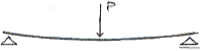
- 보의 상부는 인장력, 하부는 압축력을 받으며, 부(-)의 힘으로 작용한다.
- 보의 상부는 인장력, 하부는 압축력을 받으며, 정(+)의 힘으로 작용한다.
- 보의 상부는 압축력, 하부는 인장력을 받으며, 정(+)의 힘으로 작용한다.
- 보의 상부는 압축력, 하부는 인장력을 받으며, 부(-)의 힘으로 작용한다.
(정답률: 54%)
88. 다음중 표준품셈에서 구분되는 돌 재료의 분류상 설명으로 틀 린 것은?
- 다듬돌 : 각석 또는 주석과 같이 일정한 규격으로 다듬어진 것 으로서 건축이나 포장등에 쓰이는 돌
- 호박돌 : 호박형의 천연석으로서 가공하지 않은 지름 10cm 이하 크기의 돌
- 견치돌 : 4방락 또는 2방락의 것이 있으며, 접촉면의 폭은 전면 1변의 길이의 1/10이상이고, 접촉면의 길이는 1변의 평균 길이의 1/2 이상인 돌
- 전석 : 1개의 크기가 0.5m3이상 되는 석괴
(정답률: 46%)
89. 다음 독립기초를 각주공식에 의해 계산하면 체적은?
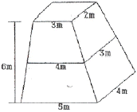
- 72m3
- 74m3
- 78m3
- 82m3
(정답률: 50%)
90. 그림과 같은 단순보에 경사하중이 작용할 때 A지점의 반력은 얼마인가?
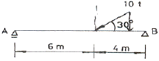
- 2ton
- 3ton
- 5ton
- 10ton
(정답률: 28%)
91. 다음중 철제 조경시설관리에서 도장의 목적이 아닌 것은?
- 물체표면의 보호
- 풍우, 부후(腐朽), 노화의 방지
- 미관의 증진
- 방충성 증진
(정답률: 50%)
92. 다음 경사로(ramp)의 구조에 관한 사항으로 옳은 것은?
- 경사는 15%내외가 적당하다.
- 바닥은 시각적으로 밝은 타일로 포장하는 것이 바람직하다.
- 안전을 위해 가드레일을 설치한다.
- 계단에 비해 수평거리가 절약된다.
(정답률: 25%)
93. 살수관개의 주요한 부품이 아닌 것은?
- 살수기
- 밸브
- 관
- 에어레이터
(정답률: 72%)
94. 저장할수 있는 시멘트량은 455포대이고 쌓을수 있는 단수는 1 3포대일 때 시멘트 창고 필요면적은?
- 10.5m2
- 14.0m2
- 17.5m2
- 21.0m2
(정답률: 47%)
95. 다음 옥외조명에 관한 사항으로 옳은 것은?
- 광도(光度)는 단위면에 수직으로 떨어지는 광속밀도로서 단위는 lux를 쓴다.
- 도로조명은 휘도차에서 오는 눈부심을 줄이기 위해 광원을 멀리한다.
- 교차로에서는 조명등의 높이가 매우 높으며, 간격은 10m정도 가 좋고, 수평선 아래의 방향으로 방사하도록 한다.
- 수은등은 고압나트륨등에 비해 2배이상의 효율을 가지고 있다.
(정답률: 58%)
96. 다음 중 시공 계획과정을 순서대로 가장 바르게 나열한 것은?
- 사전조사 -> 기본계획 -> 일정계획 -> 가설 및 조달계획
- 사전조사 -> 가설 및 조달계획 -> 일정계획 -> 기본계획
- 기본계획 -> 사전조사 -> 가설 및 조달계획 - > 일정계획
- 기본계획 -> 일정계획 -> 사전조사 -> 가설 및 조달계획
(정답률: 79%)
97. 다음 원가계산을 위한 공사비를 구성하는 항목에 대한 설명중 틀린 것은?
- 공사비를 구성하는 항목은 재료비, 노무비, 경비, 일반관리비, 이윤과 세금으로 구성된다.
- 순 공사원가는 재료비, 노무비와 경비로 구성된다.
- 노무비는 직접노무비와 간접노무비로 구성된다.
- 안전관리비는 일반관리비 항목에 구성된다.
(정답률: 48%)
98. 공사의 입찰과정 순서를 옳게 나열한 것은?
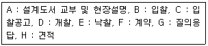
- A - C - B - G - D - E - F - H
- H - A - D - B - E - F - G - C
- C - A - G - H - B - D - E - F
- G - C - A - H - E - B - D - F
(정답률: 67%)
99. 다음 그림을 참고하여 중력식 옹벽의 설계안정성을 검토하는 방법으로 옳은 것은?
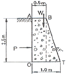
- sliding에 대한 검토로서 안전계수=(활동력/활동에 대한 저항력) 을 계산한다.
- 토압 산출 공식은
 를 이용한다.
를 이용한다. - 모멘트는 사각형 단면과 삼각형 단면의 합산후 단위당 무게와 모멘트 팔을 곱한다.
- 전도에 대한 안전성 검토에서 전도와 저항 모멘트 비율이 안전 율 3보다 커야 한다.
(정답률: 50%)
100. 곡선반경이 R인 곡선부에서 차량이 미끄러지지 않도록 곡선 반경과 횡활동 미끄럼마찰계수를 이용해서 편구배를 계산할때의 공 식으로 옳은 것은?
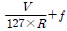
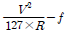
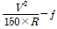
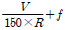
(정답률: 44%)
6과목: 조경관리론
101. 다음 가로수 가지치기의 내용중 옳지 않은 것은?
- 늘어지거나 가지끼리 교차되어 미관상 좋지 않은 가지는 반드시 가지치기를 해야 한다.
- 낙엽후부터 이른봄 새싹이 트기전에 실시하는 것을 원칙으로 하되, 상록활엽수는 절단면 동해 방지를 위해 겨울철에는 실시 하지 않는다.
- 당년에 나온 가지에 개화하는 수종은 여름에 가지치기를 한다.
- 가지 중간을 자를때에는 발아 육성하고자 하는 눈(嫩)위에서 가지치기를 한다.
(정답률: 59%)
102. 다음중 잔디 깎기의 목적이 아닌 것은?
- 잔디의 키를 짧게 하여 이용에 편리하게 한다.
- 정기적으로 깍아 줌으로 잡초를 제거한다.
- 잔디의 분얼(分蘖)을 촉진한다.
- 동토(凍土)를 방지한다.
(정답률: 53%)
103. 다음중 병원체의 월동방법중 기주(寄主)의 체내에 잠재하여 월동하는 것은?
- 잣나무털녹병균
- 오리나무갈색무늬병
- 묘목의 모잘록병균
- 밤나무뿌리혹병균
(정답률: 34%)
104. 조경관리작업에 소요되는 인원산정시 정량화가 어려운 이유와 가장 관계가 먼 것은?
- 공원 자체가 갖는 기능성
- 시설 및 재료의 획일성
- 레크리에이션 내용의 다양성
- 이용자의 속성
(정답률: 69%)
1⑤. 어느 도시공원 연간 수목 전정비가 1,000,000원 일 때 단위 작업률은? (단, 수목수 100주, 작업횟수 2년마다 1회, 작업단가 : 100,000원 이다.)(오류 신고가 접수된 문제입니다. 반드시 정답과 해설을 확인하시기 바랍니다.)
- 0.2
- 0.5
- 2
- 5
(정답률: 32%)
106. 다음 네트워크 공정표에서 주공정선(C.P)은? (단, ( )의 숫자는 소요일수, 원안의 숫자는 결합점)
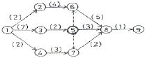
- ① - ② - ⑥ - ⑧ - ⑨
- ① - ③ - ⑤ - ⑧ - ⑨
- ① - ③ - ⑤ - ⑥ - ⑧ - ⑨
- ① - ③ - ⑤ - ⑦ - ⑧ - ⑨
(정답률: 53%)
107. 다음 내셔널 트러스트(National Trust)에 관한 설명으로 옳지 않은 것은?
- 도시환경을 아름답게 유지, 보전하기 위한 시민운동이다.
- 법에 의해서 뒷받침되고 있는 시민운동이다.
- 영국에서 시작한 시민운동이다.
- 자산취득시 양도가 불가능하다.
(정답률: 39%)
108. 도시공원 관리자가 점검 관리할 내용이 아닌 것은?
- 공원 입구에 설치된 조명등은 매일 점검한다.
- 광고판 및 교차점에 설치된 조명등을 점검한다.
- 공원 진입구의 좁은 도로에 설치된 방범등(防犯燈)은 매일 점검한다.
- 편익 및 휴양시설에 설치된 안내등을 점검한다.
(정답률: 14%)
109. 다음 안전관리 사고의 종류중 관리하자(瑕疵)에 의한 사고가 아닌 것은?
- 위험장소에 대한 안전대책의 소홀
- 이용자 자신의 부주의
- 동물의 탈출에 의한 사고
- 위험물의 방치
(정답률: 70%)
110. 레크리에이션 수용능력을 결정하는 인자중에서 가변적결정 인자는?
- 특정활동에 필요한 사람의 수
- 특정활동에 필요한 공간의 최소면적
- 특정활동에 대한 참여자의 반응정도
- 대상지 이용의 영향에 대한 회복능력
(정답률: 34%)
111. 수목관리의 연간작업계획 내용중 옳지 않은 것은?
- 지주목 결속 끈의 보수는 일년동안 수시로 점검 정비한다.
- 상록활엽수는 새순이 생장하는 봄철(3월)에 전정항이 좋다.
- 철쭉, 개나리 등의 낙엽화목류 전정은 휴면기이 동계에 실시한다.
- 거적감기는 가을(10~11월)에 실시하는 것이 병해충방제에 효과가 있다.
(정답률: 60%)
112. 정지. 전정의 방법 및 작업순서로 틀린 것은?
- 주지의 선정이 우선이다.
- 위에서 아래쪽으로, 오른쪽에서 왼쪽의 순서로 작업한다.
- 수형을 축소 또는 왜화시킬때는 늦가을에 실시한다.
- 상부는 강하게 하부는 약하게 작업한다.
(정답률: 43%)
113. 다음중 3대 시공관리 기능이 아닌 것은?
- 품질관리
- 공정관리
- 원가관리
- 인력관리
(정답률: 67%)
114. 잔디의 이용 및 관리체계에서 토양의 표면까지 잔디만 주로 잘라주는 작업으로 태치(thatch)를 제거하고 밀도를 높여주는 효과 를 기대하는 것으로 가장 적당한 것은?
- Slicing
- Vertical Mowing
- Topdressing
- Spiking
(정답률: 25%)
115. 다음중 미국 흰불나방에 관한 설명으로 옳지 않은 것은?
- 나무껍질 사이, 판자 틈, 지피물 밑에 있는 고치속에서 번데기로 월동한다.
- 유충이 활엽수보다는 침엽수의 잎을 주로 가해한다.
- 1화기(化期)보다는 2 화기에 피해가 더 심하다.
- 잎 또는 가지를 거미줄 같은곳으로 감아놓기 때문에 발견하기 쉽다.
(정답률: 50%)
116. 활엽수의 경우 질소부족현상과 유사한 현상이 나타나며, 잎의 폭이 좁아지고, 꽃의 크기가 작고 적게 맺히는 경우 결핍된 미량원 소는?
- 붕소(Br)
- 철(Fe)
- 아연(Zn)
- 몰리브덴(Mo)
(정답률: 69%)
117. 일반적으로 금속재료의 부식에 관한 내용중 틀린 것은?
- 온도가 높을수록 부식 속도가 느려진다.
- 습도가 높을수록 부식이 빨라진다.
- 염분이 많으면 부식이 촉진된다.
- 대기오염이 많으면 부식이 촉진된다.
(정답률: 65%)
118. 다음중 식물 전멸 제초제로 가장 적합한 것은?
- 파라코액제 (그라옥손)
- 아이비에이액제 (옥시베론)
- 오리자린액상수화제 (써프란)
- 메타유제 (메타시스톡스)
(정답률: 63%)
119. 다음중 레크리에이션 관리체계의 기본요소가 아닌 것은?
- 자원(resource)
- 이용자(visitor)
- 서비스(service)
- 관리(management)
(정답률: 38%)
120. 표면 배수시설에 해당되지 않는 것은?
- 측구
- 빗물받이 홈
- 유공관
- 트랜처
(정답률: 87%)